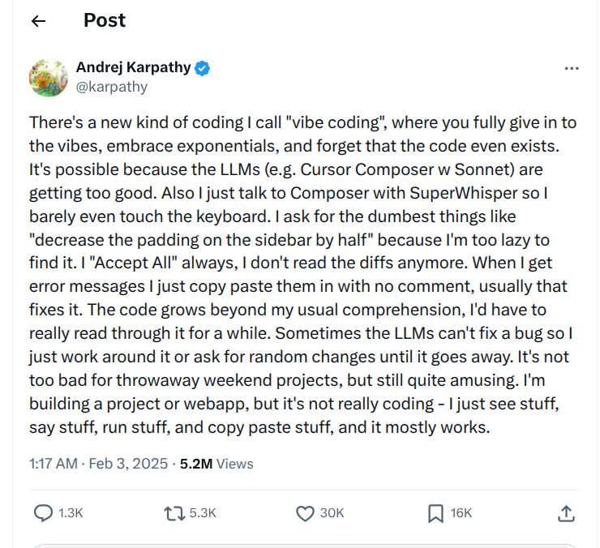
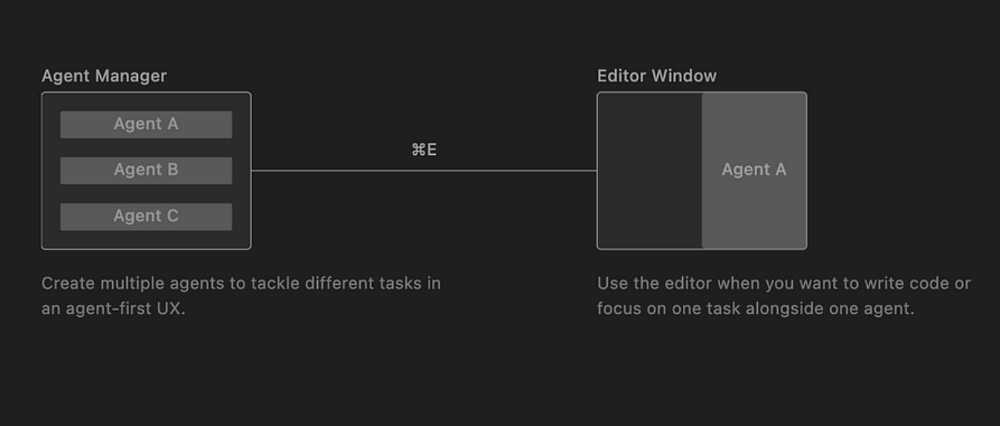

Keyboard shortcuts:
N/SpaceNext Slide
PPrevious Slide
OSlides Overview
ctrl+left clickZoom Element
If you want print version => add '
?print-pdf' at the end of slides URL (remove '#' fragment) and then print.
Like: https://ProgressBG-ChatGPT_and_ML-course.github.io/...CourseIntro.html?print-pdf
Vibe Coding
Created for
Iva E. Popova, 2016-2025,

Introduction to Vibe Coding
- Vibe Coding is a shift where the programmer focuses on the intent and the outcome (the "vibe") rather than the syntax.
- The Programmer act as the Architect; the LLM acts as the Contractor.
- The term "Vibe Coding" was coined by AI researcher Andrej Karpathy in early 2025. 
{kind=link}
Example: Data Visualization
- Instead of looking up Matplotlib syntax, you describe what the chart should feel like.
- And the LLM will generate the code:
"Create a Python script that generates some random sales data
for 12 months. Plot it as a dark-themed cyberpunk neon line chart.
Make it look cool and futuristic."
import matplotlib.pyplot as plt
import numpy as np
import calendar
# The LLM handles the specific style configurations
plt.style.use('dark_background')
months = list(calendar.month_name)[1:]
sales = np.random.randint(1000, 5000, 12)
plt.figure(figsize=(10, 6))
plt.plot(months, sales, color='#00ff41', linewidth=3, marker='o',
markerfacecolor='#fff', markersize=8)
plt.title("CYBER SALES 2077", fontsize=20, color='#00ff41')
plt.grid(color='#2A2A2A', linestyle='--', linewidth=0.5)
plt.show()
How It Works (The Vibe Coding Loop)
- Vibe coding turns the development cycle into a conversation:
- Prompt: "Build a React app that tracks my daily water intake. Make it blue and bubbly."
- Generation: The AI generates the file structure, CSS, and logic.
- Vibe Check (Testing): You run the app. It looks okay, but the bubbles are static.
- Iteration: You say, "Make the bubbles float up." You do not touch the CSS file yourself.
- Handling Errors: If the app crashes, you simply copy the scary red error text, paste it into the chat, and say "Fix this."
Overview of the Vibe Coding Ecosystem (2025)
Overview of the Vibe Coding Ecosystem (2025)
- The "Vibe Coding" landscape has fractured into specialized tools, each serving a different stage of the creation process—from instant prototyping in the browser to deep, agentic architecture in the IDE.
| Category | Tool | The "Vibe" / Role | Best For... |
|---|---|---|---|
| Cloud Native (Zero Setup) |
Bolt.new |
"Instant App Generator" Runs entirely in the browser using WebContainers. You prompt, it renders a live full-stack app instantly. No localhost required. |
Rapid prototyping, MVPs, and non-technical founders building complete web apps from scratch. |
| Replit |
"The Autonomous Factory" Features Replit Agent, which acts as a project manager. It plans, codes, and deploys. Strong on collaboration and "always on" cloud hosting. |
Beginners and teams who want to go from "Idea" to "Deployed URL" without touching a terminal. | |
| IDE (Deep Work) |
Cursor |
"The Pro's Scalpel" A fork of VS Code. Its Composer feature (Cmd+I) allows it to edit multiple files simultaneously. It is the current "gold standard" for professional vibe coding. |
Professional developers who need the power of an IDE but the speed of AI. Local-first development. |
| Google Antigravity |
"Mission Control" Released late 2025. An "Agent-First IDE" where you manage a team of autonomous agents rather than typing code. Introduces Artifacts to verify agent work. |
Managing complex, multi-agent workflows where the human acts purely as a supervisor/auditor. | |
| GitHub Copilot |
"The Enterprise Standard" Integrated into VS Code. While historically an autocomplete tool, Copilot Workspace has evolved it into a plan-and-execute agent ecosystem. |
Enterprise environments requiring strict security compliance and deep GitHub ecosystem integration. | |
| Terminal (Power User) |
Claude Code |
"The Senior Engineer in Your Shell" An autonomous CLI agent by Anthropic. It lives in your terminal, reads your file system, and executes complex refactors or bug fixes via command line. |
DevOps, backend engineering, and power users who prefer the terminal over a GUI. |
Google Antigravity
Google Antigravity
The "Mission Control" for Vibe Coding
- Released in November 2025 alongside Gemini 3, Google Antigravity represents the next evolution of the vibe coding ecosystem.
- While tools like Cursor are "AI-powered text editors," Antigravity is an "Agent-First IDE."
- The core philosophy is that you shouldn't just be typing code with an AI assistant; you should be managing a team of autonomous agents who write/test/debug the code for you.
Key Features
Key Features
Multi-Agent Orchestration
- You can have multiple agents working on different branches or parts of your codebase simultaneously.
- Example:
- You tell Agent A to "Update the UI to match the new design,"
- You tell Agent B to "Write unit tests for the backend API."
- Both work in parallel while you sip coffee. 
{kind=link}
Artifacts (Trust but Verify)
- Because you aren't writing the code, trusting the AI is hard. Antigravity solves this with Artifacts—structured deliverables the agent presents to you for approval before merging code
- The Plan: A checklist of what the agent intends to do.
- The Diff: A clean view of code changes.
- The Proof: Screenshots or browser recordings of the agent testing the app to prove it works.
Built-in Browser & "Vibe Check"
- Antigravity includes a headless browser that agents can control.
- Self-Correction: The agent writes code, opens the internal browser, sees an error (or a button that looks wrong), and fixes it without you asking.
- Visual Debugging: It can record a video of itself clicking through the app, which you can watch to verify the "vibe."
Antigravity vs. Cursor
Antigravity vs. Cursor
- Use Cursor 2.0 if: You want to explore options. You want to say "Refactor this component" and see 3 different ways to do it, then pick the cleanest code. You still want to be the one hitting the "Merge" button.
- Use Antigravity if: You want to delegate responsibility. You want to say "Add a login page" and trust the system to handle the backend, frontend, and database schema coordination without you reviewing every file.
| Feature | Cursor 2.0 (Composer) | Google Antigravity |
|---|---|---|
| Agent Architecture |
Horizontal (Parallel) Spins up multiple independent agents simultaneously. They don't talk to each other; they compete to solve your prompt. |
Vertical (Hierarchical) Spins up a "Manager Agent" that delegates tasks to specialized sub-agents (QA, Backend) who collaborate and plan together. |
| The "Vibe" / Role |
The Tech Lead You assign a task, the AI generates 3 different solutions (PRs), and you review/merge the best code. |
The Product Manager You define the specs. The "Agency" builds, tests, and presents a working demo for approval. |
| Killer Feature |
"Best-of-N" Coding Ask for a refactor and get 3 different implementation options instantly. You pick the cleanest one. |
Visual Proof (Artifacts) Agents provide screenshots or video recordings of them interacting with the app to prove the fix works. |
| Isolation Tech |
Git Worktrees Uses local Git branches to keep parallel agent experiments isolated until you hit "Apply." |
Cloud Sandboxes Agents run in ephemeral cloud environments with their own headless browsers and terminals. |
Hands-On: Vibe code the Todo List App
Hands-On: Vibe code the Todo List App
Hands-On: Vibe code the Todo List App
- Use Antigravity to build a Todo List App
Homework
Homework
- The tasks are given in next file
- You can copy it and work directly on it. Just put your code under "### Your code here".
These slides are based on
customised version of
framework